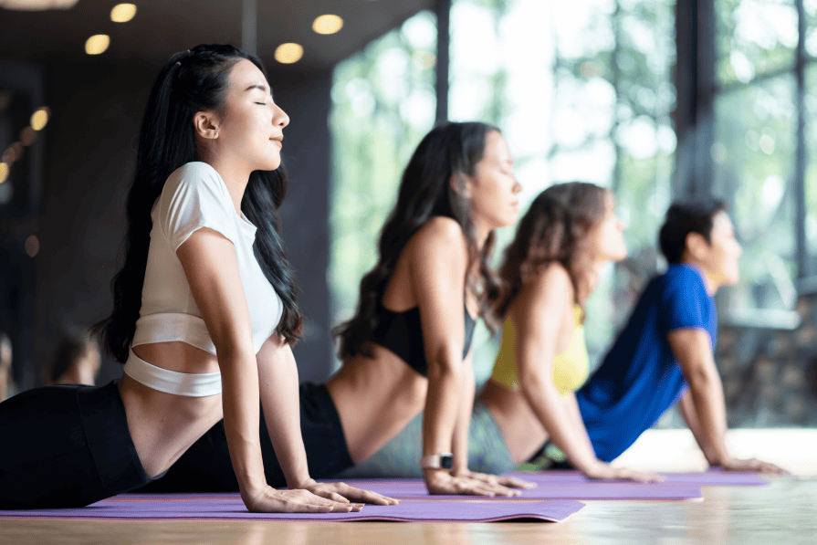
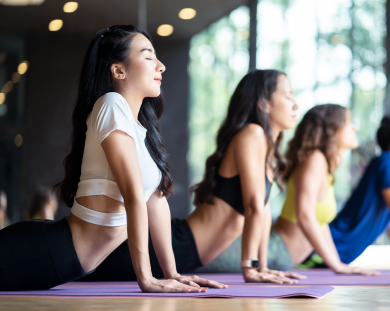
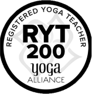

RYT(Registerd Yoga Teacher : 登録ヨガティーチャー) 200とは、 実技と座学を含む200時間のカリキュラムを経て取得できる、 全米ヨガアライアンス認定ヨガインストラクター資格です。 ヨガに対する哲学や深い知識と理解を学び世界に通用する指導者を育成します。
オンライン無料相談はこちら
RYT(Registerd Yoga Teacher : 登録ヨガティーチャー) 200とは、 実技と座学を含む200時間のカリキュラムを経て取得できる、 全米ヨガアライアンス認定ヨガインストラクター資格です。 ヨガに対する哲学や深い知識と理解を学び世界に通用する指導者を育成します。
アーサナ
プラーナーヤーマ
思想
哲学
瞑想
当アカデミーのプログラムは、インストラクターとしても実績があり多くのインストラクターを輩出してきた講師だからこそ 伝えられる6つの繋がりを明確にしながら身になるヨガを学びます。
01
当スクールでは、 卒業後に即戦力として働けるインストラクターのスキルを学ぶ事ができます。
スタジオ運営をしていると、毎年多くの RYT200 修了生がオーディションに訪れます。ですが、その中で即戦力として働ける方はほとんどいらっしゃいません。
再度、当スタジオの研修を受けて頂いているのが現状です。
そこで当スクールでは、研修制度のノウハウを生かし、Lessonを行うために必要な「ポーズカ」「Lesson構成力」「誘導方法」「解剖学的に見る力」「空間作り」
の5つの要素に重点を置き、学んでいきます。
卒業後、入社試験やオーディションに自信を持って臨む事ができる、唯一無二の求められる人材になって頂く事が目標です。
02
幅広い内容を知識の習得、体験、実践を通して1つ1つのつながりを感じながら、より効果的に学ぶ事ができます。
① ヨガの歴史と哲学
② アーユルヴェーダ・食事
③ アーサナー〜メディテーションのつながり
④ 基礎ポーズ・応用ポーズとポーズの解説
（正しいポーズの取り方・注意点・軽減法・アジャスト・解剖学的要素）
⑤ 指導力「ポーズカ」「Lesson構成力」「誘導方法」
「解剖学的に見る力」「空間作り」の5つの要素
各学びが、インストラクターとして繋がるように工夫してお伝えいたします。
03
少人数制のため、それぞれの受講者と向き合う時間を確保し、一人一人にしっかりと指導できるよう工夫をしています。
04
安心の適正価格 ¥404,000（税込）
RYT200の受講費用は各スクールが自由に設定できます。
各スクールの費用を比較すると、300,000〜600,000円。
質の高い学びを提供させていただくにはコストがかかりますが、
価格が高いと受講しにくいと考え、当アカデミーでは受講価格を適正価格に下げて設定いたしました。
05
仕事や育児などで時間が限られている方でも、しっかり学んでいただけるスケジュール設定を行っています。 ご自身のライフスタイルに合うスケジュールをお選びください。
06
ハタヨガ・ヴィンヤサヨガの違いを理解しレッスンを考案できる
・解剖学にアプローチしたクラス
（骨盤調整ヨガ・肩こり解消ヨガなど）を考案できる
・オーディションや入社試験に自身が持てる
・自身のプラクティスの質が高まり生活の質が高まる
インストラクターを目指す方・実践練習を望む方には、実際お客様を対象としてレッスンができる機会を設けております。
07
卒業後、 それぞれヨガの知識を使って人生をより豊かにする様々なライフプランを設計し、その道を歩んでいかれると思います。 当アカデミーでは、卒業生のコミュニティを大切にし、様々な形で活動のサポートを行っています。
20代女性
この講座を受講してからヨガインストラクターの仕事をしています。豊富な知識を学ぶことができたので、自身を持って仕事ができています。 少人数制なので、一人一人しっかりとサポートしていただけるのが良かったです。
30代男性
元々趣味でヨガ教室に通っていたのですが、本格的に知識をつけたい！と思い受講しました。 今は平日会社員をしながら、休日はヨガインストラクターとして活動しています。卒業後のサポートが充実しているので安心できました。
30代女性
ヨガを始めたいと思っていたのですが、子育て中なのもあり両立できるか不安でした。 この講座はライフスタイルに合わせてスケジュール設定ができ、育児で忙しい私でも無理なく続けることができました。
当スクールでは、 検討されている方へ相談やご質問を承っております。 講座概要、受講システム、通い方や支払方法などについて詳しく知りたい方はお気軽にご相談ください。